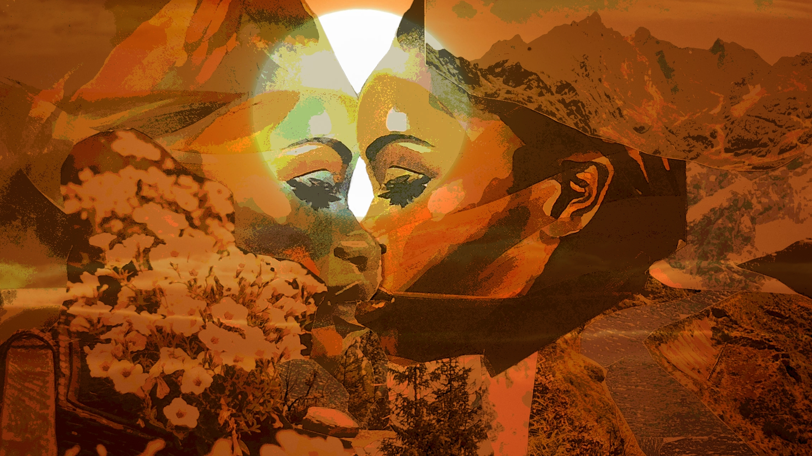

>daybreak<
avatar(s): li milan, nibiru fæ, penny lane, surya samhita, tris kemet, wotan al-kitab
role(s): illustrator
associate(s): franklin raines
date(s): 07.2026
location(s): dallas, tx, usa
platform(s): junk mail clippings, gimp

abstract
love is the creative power that lights and shapes our worlds.
genuine relationships involve direct contact with otherness, thus generating heat through friction and making change. they are predicated upon mutual respect and intentional vulnerability amounting to free association. this scene centers a depiction of black, queer intimacy, framed by nature and saturated with astral light. special thanks to franklin raines for motivating me to get out of the house and do something.